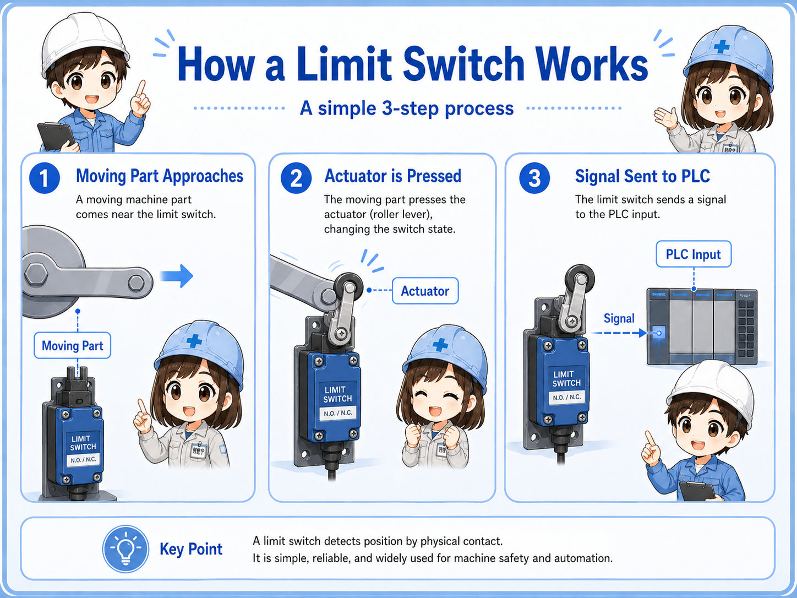
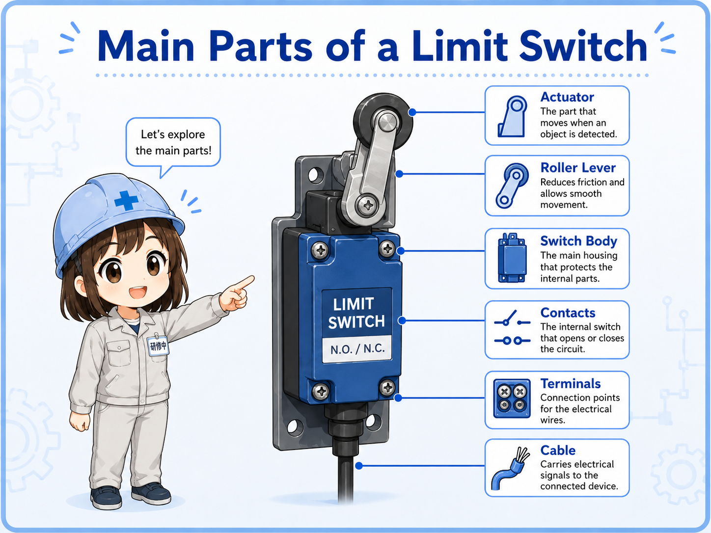
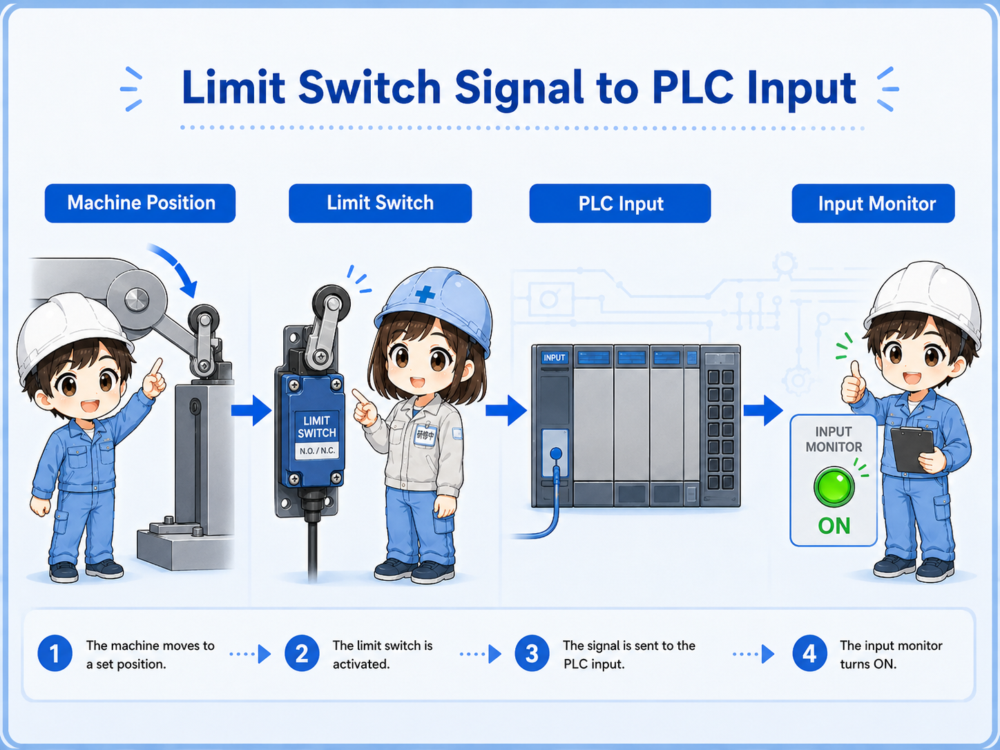
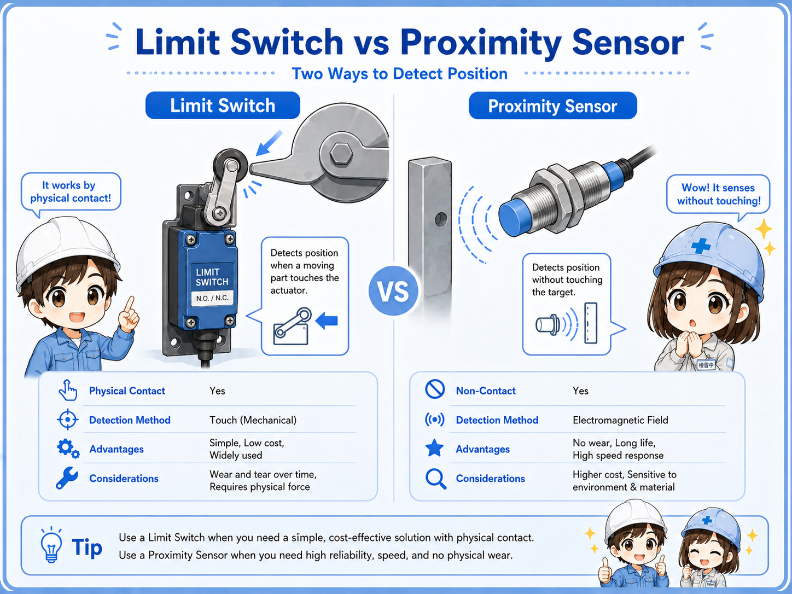
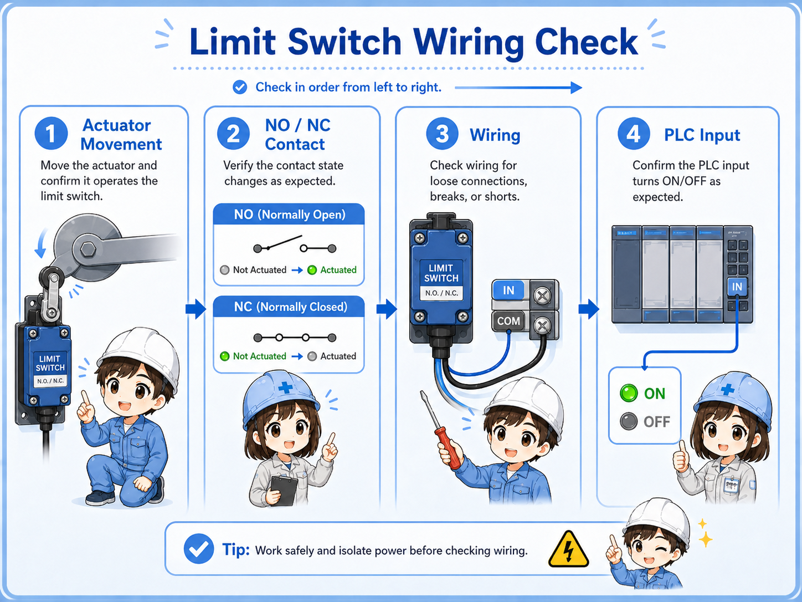
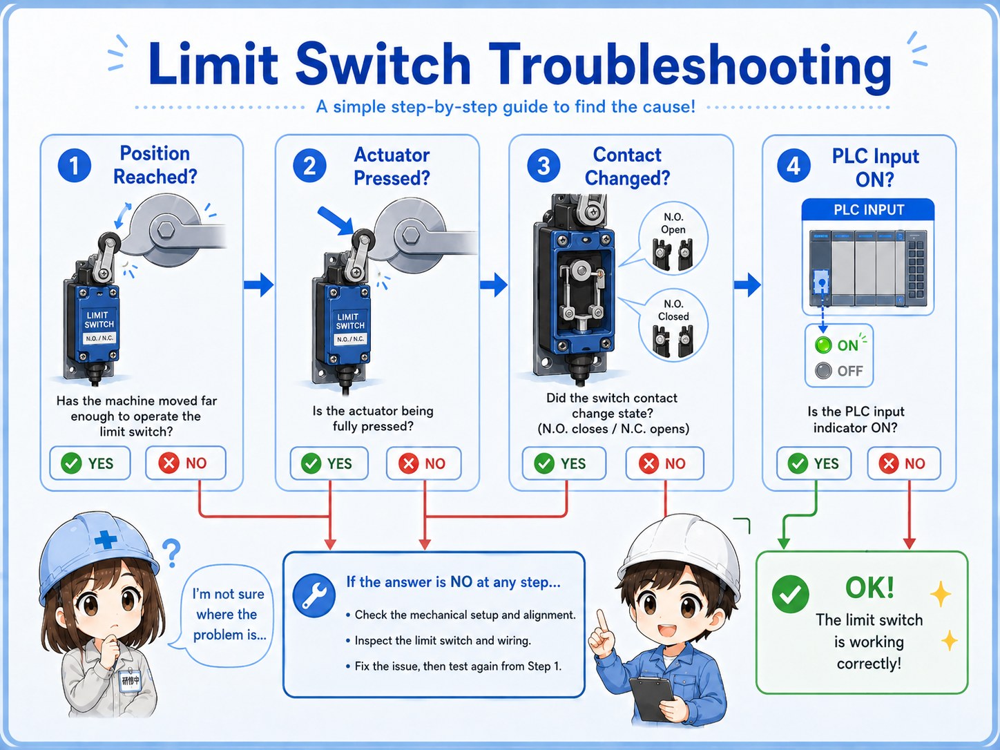

1. The basic idea: physical movement changes a contact
A limit switch is a mechanical position sensor that changes contact state when its actuator is pushed or moved.
A limit switch is often used when the machine needs to confirm a position. For example, a mechanism may reach the end of travel, a door may close, a workpiece may press a roller, or a cylinder may reach its home position.
When the moving part touches the switch actuator, the internal contact changes state. The control panel or PLC reads that change as an input signal. In other words, the switch converts mechanical position into an electrical signal.
Short version: moving part touches actuator → contact changes → PLC input changes → program uses the position signal.
- Mechanical position
- Actuator
- Roller lever
- NO / NC contact
- PLC input
- End position

The first question to ask
When troubleshooting a limit switch, do not start only from the electrical side. First confirm whether the mechanism actually operates the switch enough to change the contact.

Senior
A limit switch is a sensor, but it is a mechanical one. The machine must physically move the actuator.

Junior
So if the PLC input is off, the problem may be mechanical position, not just wiring?
Senior
Exactly. Check the actuator movement before assuming the switch is broken.
2. Main parts of a limit switch
A limit switch is simple, but each part affects how reliably the signal changes.
Most limit switch checks become easier if you separate the outside mechanism from the inside contact. The outside part is operated by the machine. The inside part changes the electrical contact state.
| Part | Role | Field check point |
|---|---|---|
| Actuator | The moving part of the switch, such as a roller lever, plunger, or lever. | Does the machine hit it smoothly and fully? |
| Internal contact | The electrical contact that opens or closes when the actuator moves. | Does continuity change when the actuator is operated? |
| Terminals | Connection points for NO, NC, and common contacts. | Are the wires connected to the intended contact terminals? |
| Mounting bracket | Holds the switch at the correct position and angle. | Is it loose, bent, shifted, or installed too far away? |
| Cable / connector | Carries the signal to the panel or PLC input. | Is there damage, oil, pulling force, or connector looseness? |

3. How a limit switch appears to the PLC
From the PLC side, a limit switch is usually read as an ON/OFF input signal.
The PLC does not directly know where the machine is. It only reads the input signal. The program gives that input a meaning, such as “home position,” “forward end,” “door closed,” “part present,” or “mechanism limit reached.”
1. Machine moves
A part, cam, door, or cylinder position reaches the switch.
2. Switch operates
The actuator moves and the internal contact changes state.
3. PLC input changes
The input monitor turns ON or OFF and the program uses that condition.

Field-friendly view
If the mechanism touches the switch but the PLC input does not change, check the actuator stroke, contact terminal, wire, common wiring, and input monitor separately.
4. NO and NC contacts in a limit switch
A limit switch may have NO and NC contacts, so the terminal choice changes the signal behavior.
Many limit switches provide both normally open and normally closed contacts. The same physical switch can therefore be wired in different ways. This is why checking only the switch movement is not enough; you also need to confirm which terminals are used.
| Contact type | Normal state | When actuator is operated | Common use image |
|---|---|---|---|
| NO contact | Open | Closes | Signal turns ON when the switch is pressed. |
| NC contact | Closed | Opens | Signal turns OFF when the switch is pressed. |
Normal state matters
“Normal” means the switch is not being operated. If the machine normally holds the switch pressed, the PLC signal may look opposite from what a beginner expects.
5. Limit switch vs proximity sensor
A limit switch detects by physical contact. A proximity sensor detects without contact.
Both devices can be used for position detection, but the way they detect is different. A limit switch has mechanical movement and contact wear. A proximity sensor has no mechanical actuator, but it depends on target material, sensing distance, mounting, and output type.
| Item | Limit switch | Proximity sensor |
|---|---|---|
| Detection method | Physical contact with actuator. | Non-contact detection within sensing range. |
| Strong point | Easy to understand mechanically and visually. | No mechanical contact and less wear from operation. |
| Common concern | Wear, actuator damage, mounting shift, mechanical shock. | Distance, target material, metal chips, output type mismatch. |
| Typical check | Does the mechanism press the actuator fully? | Is the target within the detection range? |

6. Mounting and adjustment points
Many limit switch problems come from position, angle, stroke, looseness, or mechanical wear.
A limit switch can be electrically normal but still fail to send the expected signal if the machine does not operate it correctly. Brackets can shift, rollers can wear, levers can bend, cams can miss the actuator, and moving parts can stop slightly short.
Actuator stroke
Is the actuator moved far enough to reliably change the internal contact?
Approach direction
Does the moving part hit the roller or lever from the correct direction and angle?
Mounting looseness
Is the switch body or bracket loose, bent, cracked, or shifted from the original position?
Mechanical wear
Is the roller, lever, cam, or contact point worn enough to change the timing?
Practical view
If a limit signal becomes unstable after adjustment, part replacement, or mechanical repair, check the physical operating position before replacing electrical parts.
7. Practical wiring checks
Separate the mechanical operation, contact state, wiring path, and PLC input monitor.
A good limit switch check does not stop at “the lever moves.” You need to confirm that the correct contact changes state and that the signal reaches the PLC input terminal. A continuity check and PLC input monitor check are both useful.
1. Operate the actuator
Move the actuator by hand only when safe, or watch whether the machine operates it fully.
2. Check contact state
Use the drawing or terminal numbers to confirm whether the used contact is NO or NC.
3. Check wiring continuity
Check for broken wires, loose terminals, connector issues, or damaged cable near moving parts.
4. Check PLC input
Compare the actual switch state with the PLC input monitor and program condition.

Be careful with moving machinery
A limit switch may be near moving parts. Follow site rules, lockout/tagout procedures, and safe measurement methods before touching or bypassing anything.
8. Common beginner mistakes
Limit switch mistakes often happen when mechanical movement and electrical contact behavior are mixed together.
Mistake 1: judging by appearance only
The switch may look pressed, but the actuator may not have moved far enough to change the internal contact.
Mistake 2: mixing up NO and NC
The same switch body may have multiple terminals. Using a different contact changes the signal behavior.
Mistake 3: ignoring mounting shift
A slightly bent bracket or loose screw can cause unstable detection even if the switch itself is normal.
Mistake 4: checking only the switch
The contact may change correctly, but the PLC input may still be off due to wiring, common, or input unit issues.
Mechanical and electrical checks are both needed
A limit switch problem may be mechanical, electrical, or both. The safest approach is to check the movement first, then the contact, then the PLC input.
9. Troubleshooting limit switch problems
Move from the machine side toward the PLC side step by step.
Machine position
Does the moving part actually reach and operate the switch correctly?
Contact change
Does the internal contact open or close when the actuator moves?
PLC input
Does the PLC input monitor change in the same way the drawing expects?

Junior
The cylinder reaches the end, but the PLC input does not turn on. Should I replace the switch?
Senior
Check whether the actuator is pressed fully, then check the contact and the PLC input. The switch may not be the first problem.
10. Practical safety notes
A limit switch can affect movement, interlocks, alarms, and stop conditions.
Some limit switches are used only for position confirmation. Others may affect stop conditions, interlocks, home position checks, door confirmation, or abnormal travel detection. Always check the drawing and site rules before changing wiring, moving brackets, bypassing the switch, or forcing an input.
Do not bypass casually
Forcing a limit switch signal can make equipment move unexpectedly. Follow lockout/tagout rules and machine-specific procedures before testing.
Keep learning in layers
Limit switch checks become easier when you understand sensors, PLC inputs, NO/NC contacts, self-holding circuits, and interlock circuits.